Code
source("../_globals.r")
lexp_df <- read.csv("assets/lexp_by_ward.csv")
plot(
lexp_df$ward, lexp_df$life_exp,
main="DC Life Expectancy by Ward (2015)",
xlab="Ward", ylab="Life Expectancy",
pch=19, cex.lab=2, cex.main=2, cex.axis=2
)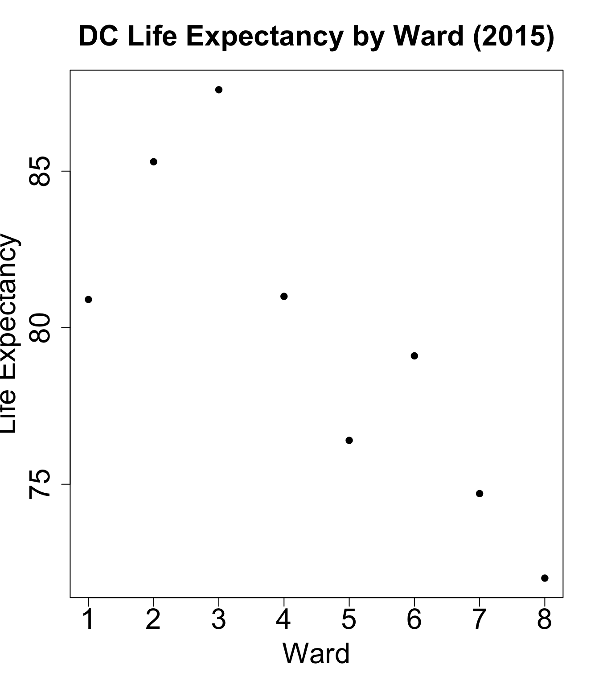
Week 8, Part 1
source("../_globals.r")
lexp_df <- read.csv("assets/lexp_by_ward.csv")
plot(
lexp_df$ward, lexp_df$life_exp,
main="DC Life Expectancy by Ward (2015)",
xlab="Ward", ylab="Life Expectancy",
pch=19, cex.lab=2, cex.main=2, cex.axis=2
)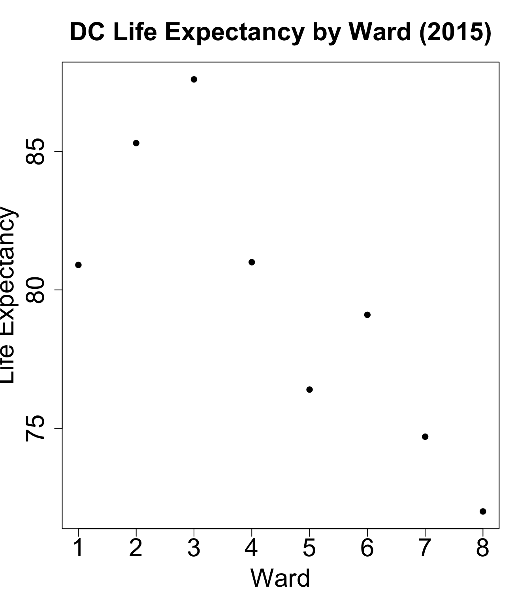
library(tidyverse)── Attaching core tidyverse packages ──────────────────────── tidyverse 2.0.0 ──
✔ dplyr 1.1.2 ✔ readr 2.1.4
✔ forcats 1.0.0 ✔ stringr 1.5.1
✔ lubridate 1.9.2 ✔ tibble 3.2.1
✔ purrr 1.0.2 ✔ tidyr 1.3.0
── Conflicts ────────────────────────────────────────── tidyverse_conflicts() ──
✖ dplyr::filter() masks stats::filter()
✖ dplyr::lag() masks stats::lag()
ℹ Use the conflicted package (<http://conflicted.r-lib.org/>) to force all conflicts to become errorsus_mean <- 78.69
lexp_df <- read_csv("assets/lexp_by_ward.csv")Rows: 8 Columns: 3
── Column specification ────────────────────────────────────────────────────────
Delimiter: ","
dbl (3): year, ward, life_exp
ℹ Use `spec()` to retrieve the full column specification for this data.
ℹ Specify the column types or set `show_col_types = FALSE` to quiet this message.lexp_df <- lexp_df |> mutate(
above_avg = ifelse(life_exp > us_mean, "Above Mean", "Below Mean")
)
lexp_df |> ggplot(aes(x=as.factor(ward), y=life_exp, color=above_avg)) +
geom_point(size=5) +
geom_segment(
aes(xend=ward, yend=us_mean),
linewidth=1.5
) +
geom_hline(
aes(
yintercept=us_mean,
linetype="National Mean"
),
linewidth=1
) +
dsan_theme("half") +
theme(
plot.title = element_text(hjust = 0.5)
) +
labs(
x = "Ward",
y = "Life Expectancy",
title = "DC Life Expectancy by Ward (2015)"
) +
scale_linetype_manual("test", values=c("dashed")) +
remove_legend_title()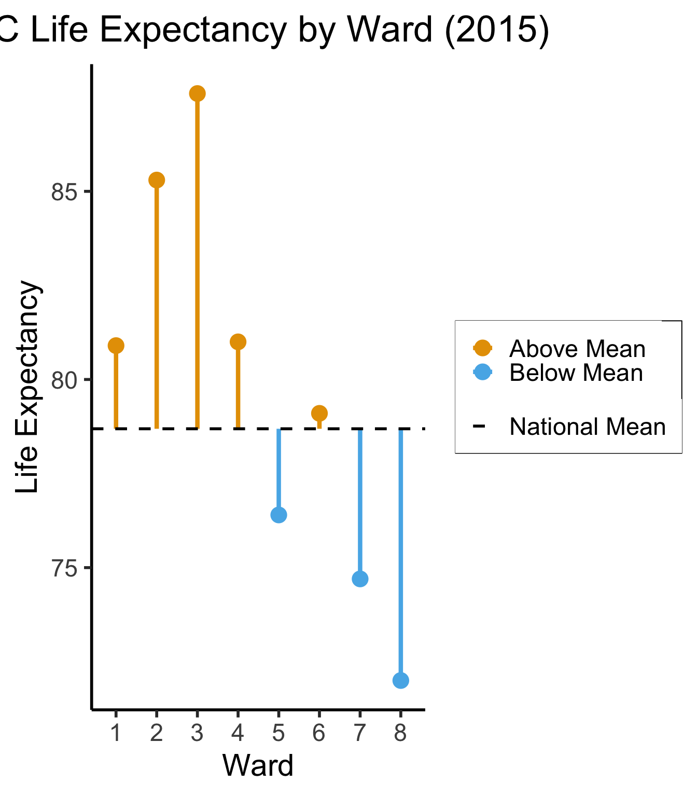
(All using the same syntax)
library(sf)Linking to GEOS 3.11.0, GDAL 3.5.3, PROJ 9.1.0; sf_use_s2() is TRUEmy_sf <- read_sf("assets/Wards_from_2022.geojson")
my_sf_merged <- my_sf |> left_join(
lexp_df, by=c("WARD"="ward")
)
my_sf_merged |> ggplot(aes(fill=life_exp)) +
geom_sf() +
dsan_theme() +
theme(
axis.line = element_blank(),
axis.text = element_blank(),
axis.ticks = element_blank()
) +
labs(
title = "DC Life Expectancy by Ward (2015)",
fill = "Life Exp."
) +
scale_fill_viridis_c()library(tidyverse)
library(datasets)
anscombe_df <- datasets::anscombe |>
#mutate(id = row_number()) |>
pivot_longer(
everything(),
cols_vary = "slowest",
names_to = c(".value", "Dataset"),
names_pattern = "(.)(.)"
)
anscombe_plot_base <- anscombe_df |>
ggplot(aes(x=x, y=y, color=Dataset)) +
geom_point(size=g_pointsize / 2) +
geom_smooth(method="lm", se=FALSE, fullrange=TRUE) +
dsan_theme("full") +
xlim(c(4, 20)) + ylim(c(2, 14))
anscombe_plot_base +
facet_wrap(vars(Dataset), nrow=2, scales="free")`geom_smooth()` using formula = 'y ~ x'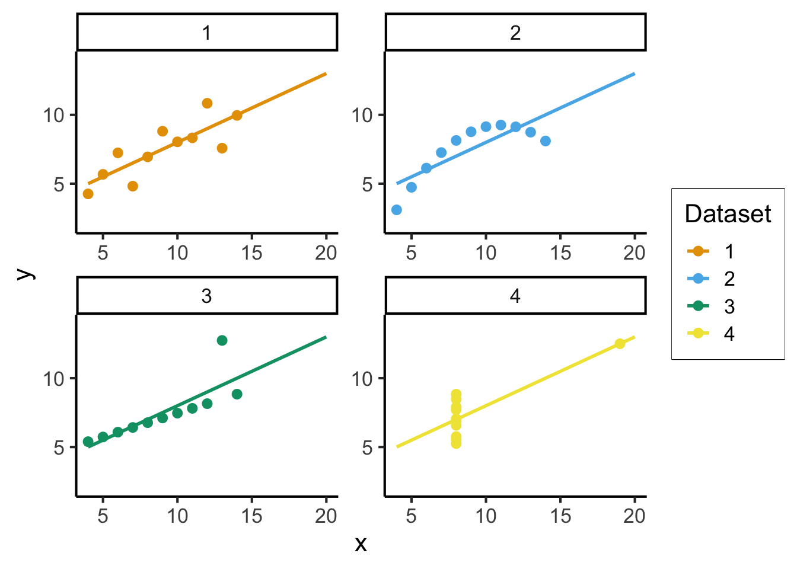
`geom_smooth()` using formula = 'y ~ x'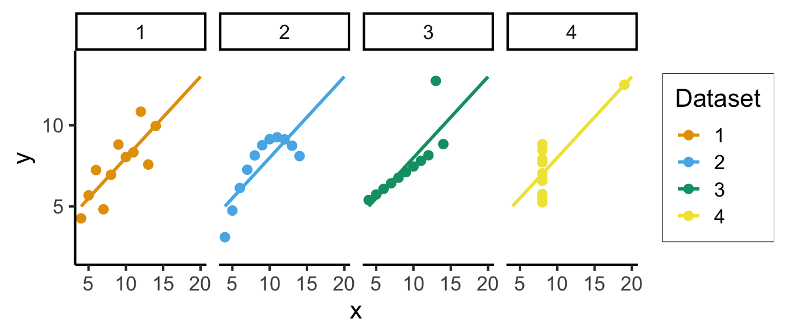
anscombe_df |> group_by(Dataset) |>
summarize(
x_mean = round(mean(x), 2),
y_mean = round(mean(y), 2)
)| Dataset | x_mean | y_mean |
|---|---|---|
| 1 | 9 | 7.5 |
| 2 | 9 | 7.5 |
| 3 | 9 | 7.5 |
| 4 | 9 | 7.5 |
anscombe_df |> group_by(Dataset) |>
summarize(
x_sd = round(sd(x), 2),
y_sd = round(sd(y), 2)
)| Dataset | x_sd | y_sd |
|---|---|---|
| 1 | 3.32 | 2.03 |
| 2 | 3.32 | 2.03 |
| 3 | 3.32 | 2.03 |
| 4 | 3.32 | 2.03 |
library(corrr)
corr_df <- anscombe_df |>
group_by(Dataset) |>
summarize(
r = round(cor(x, y), 2)
)
corr_df| Dataset | r |
|---|---|
| 1 | 0.82 |
| 2 | 0.82 |
| 3 | 0.82 |
| 4 | 0.82 |
`geom_smooth()` using formula = 'y ~ x'library(broom)
lm_df <- anscombe_df |> group_by(Dataset) |>
do(tidy(lm(y ~ x, data = .))) |>
mutate(across(where(is.numeric), round, 2)) |>
ungroup() |>
mutate(
term = gsub("Intercept","Int", term)
)Warning: There was 1 warning in `mutate()`.
ℹ In argument: `across(where(is.numeric), round, 2)`.
ℹ In group 1: `Dataset = "1"`.
Caused by warning:
! The `...` argument of `across()` is deprecated as of dplyr 1.1.0.
Supply arguments directly to `.fns` through an anonymous function instead.
# Previously
across(a:b, mean, na.rm = TRUE)
# Now
across(a:b, \(x) mean(x, na.rm = TRUE))lm_df |> filter(Dataset == 1) |> select(!Dataset)| term | estimate | std.error | statistic | p.value |
|---|---|---|---|---|
| (Int) | 3.0 | 1.12 | 2.67 | 0.03 |
| x | 0.5 | 0.12 | 4.24 | 0.00 |
lm_df |> filter(Dataset == 2) |> select(!Dataset)| term | estimate | std.error | statistic | p.value |
|---|---|---|---|---|
| (Int) | 3.0 | 1.13 | 2.67 | 0.03 |
| x | 0.5 | 0.12 | 4.24 | 0.00 |
lm_df |> filter(Dataset == 3) |> select(!Dataset)| term | estimate | std.error | statistic | p.value |
|---|---|---|---|---|
| (Int) | 3.0 | 1.12 | 2.67 | 0.03 |
| x | 0.5 | 0.12 | 4.24 | 0.00 |
lm_df |> filter(Dataset == 4) |> select(!Dataset)| term | estimate | std.error | statistic | p.value |
|---|---|---|---|---|
| (Int) | 3.0 | 1.12 | 2.67 | 0.03 |
| x | 0.5 | 0.12 | 4.24 | 0.00 |
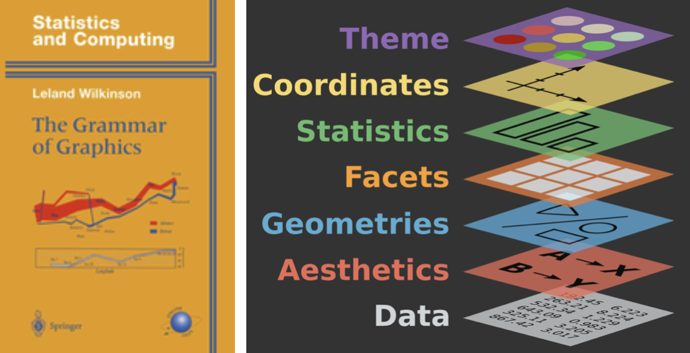
Split the visualization task into discrete steps, joined by |>!
| Layer | Function | Explanation |
|---|---|---|
| Data | ggplot(df) |
Raw data you want to visualize |
| Aesthetics | aes(x=xcol,y=ycol) |
Mapping of df columns onto geometries |
| Geometries | geom_*() |
Which geometric objects to use |
| Facets | facet_*() |
Arrangement of plots into a grid |
| Theme | theme(), labs() |
Overall visual defaults, titles, axis labels |
(See the official ggplot2 book for more!)
ggplot2 In Practice(In practice, a few central graphical primitives you’ll use over and over again)
geom_bar()
bar_data <- tribble(
~Category, ~Value,
"A", 100,
"B", 200
)
ggplot(bar_data, aes(x=Category, y=Value)) +
geom_bar(stat="identity") +
dsan_theme("quarter")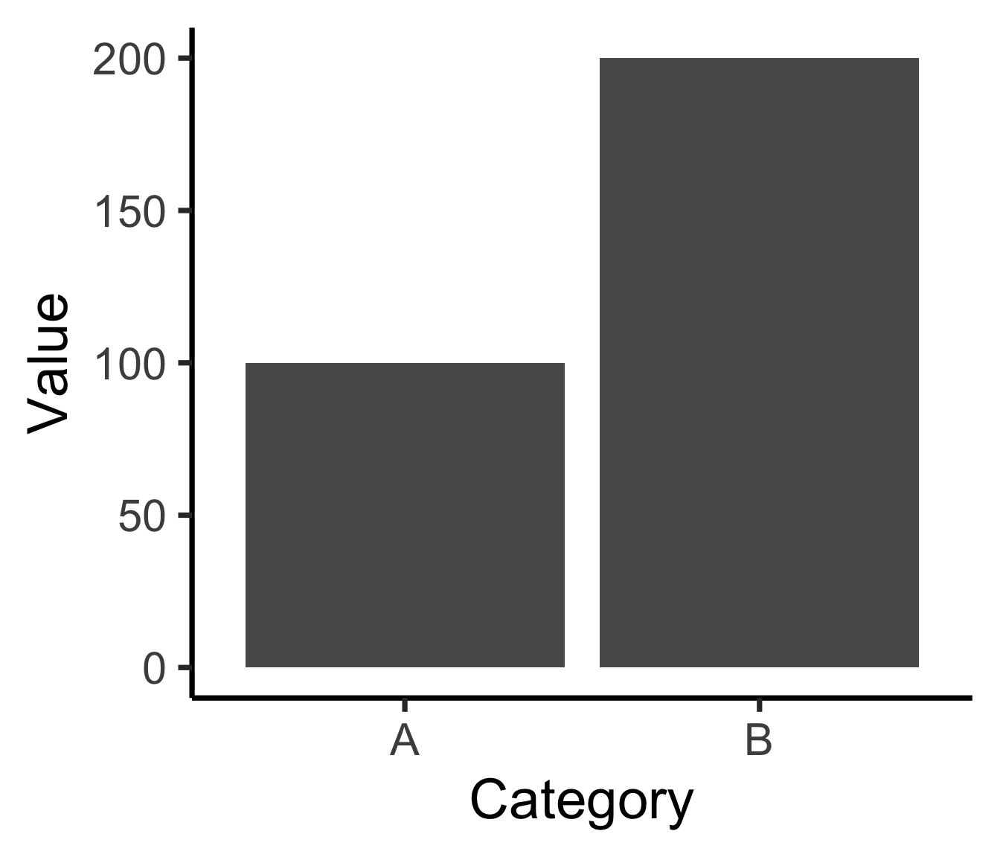
stat_function()
ggplot(data.frame(x=c(-4,4)), aes(x=x)) +
stat_function(fun=dnorm, linewidth=g_linewidth) +
dsan_theme("quarter")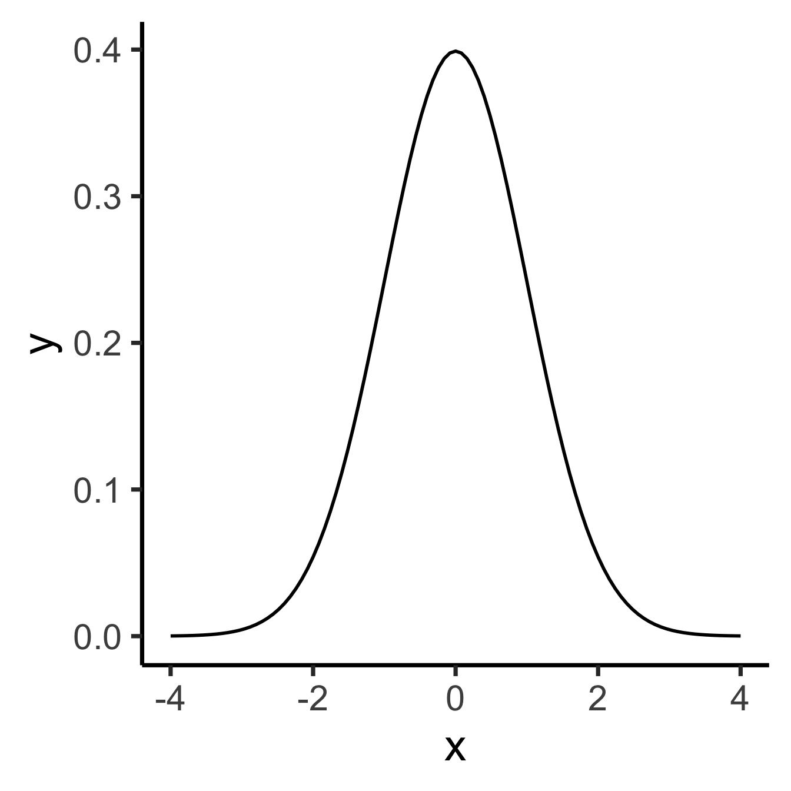
geom_point() for scatterplots
N_scatter <- 50
random_points <- data.frame(x=runif(N_scatter,0,1),y=runif(N_scatter,0,1))
ggplot(random_points, aes(x=x, y=y)) +
geom_point(size = g_pointsize) +
dsan_theme("quarter")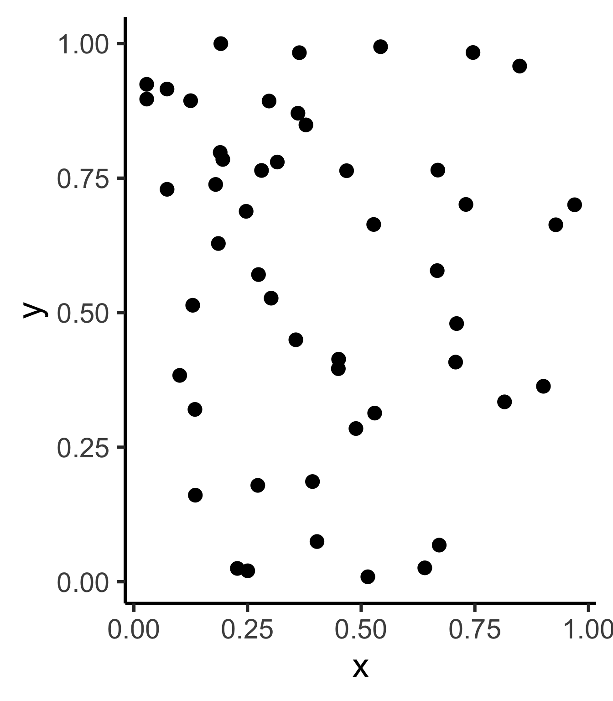
and geom_line() for line graphs
N_line <- 15
rand_line <- data.frame(x=seq(1,N_line),y=runif(N_line,0,10))
ggplot(rand_line, aes(x=x, y=y)) +
geom_line(linewidth = g_linewidth) +
dsan_theme("quarter")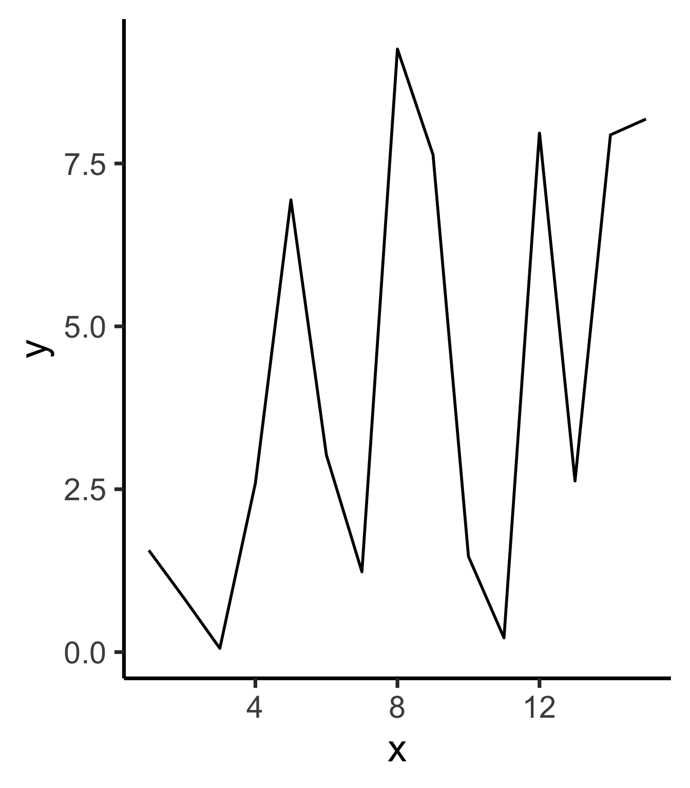
…Which can be used together in a single plot:
ggplot(rand_line, aes(x=x, y=y)) +
geom_line(linewidth=g_linewidth) +
geom_point(size=g_pointsize/2) +
dsan_theme("full")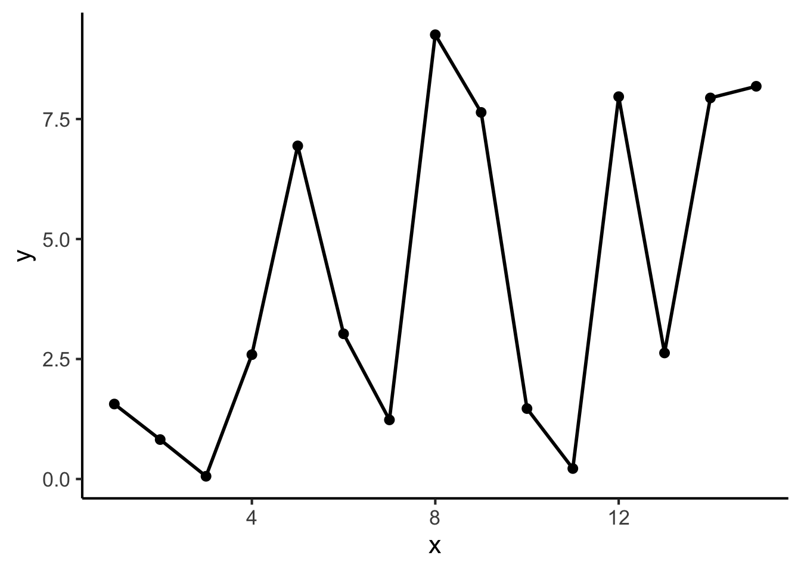
Can all be accomplished using the labs() function!
rand_plot <- rand_line |>
ggplot(aes(x=x, y=y)) +
geom_line(linewidth=g_linewidth) +
geom_point(size=g_pointsize/2) +
dsan_theme("quarter") +
labs(
title = "My Cool Plot",
x = "The x value",
y = "The y value"
)rand_plot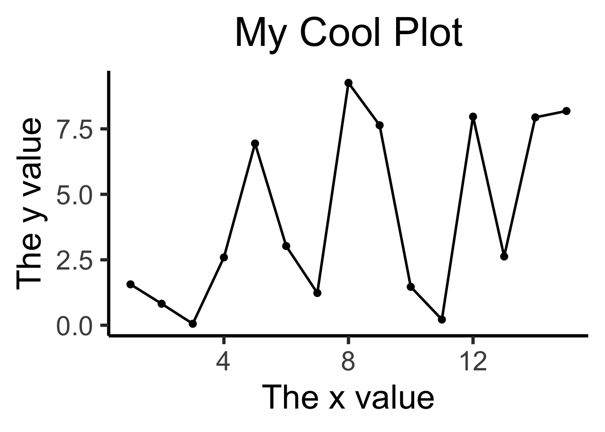
Use the color aesthetic with factor() to differentiate categories
set.seed(2024)
centroids <- list(c(0,0),c(0,1),c(1,0),c(1,1))
cluster_df <- tibble()
N <- 50
Sigma <- matrix(c(0.05, 0, 0, 0.05), nrow=2, ncol=2, byrow=TRUE)
for (i in 1:length(centroids)) {
cur_centroid <- centroids[[i]]
# Generate N points from this centroid
cur_data <- MASS::mvrnorm(N, cur_centroid, Sigma)
colnames(cur_data) <- c("x", "y")
cur_df <- as_tibble(cur_data)
cur_df <- cur_df |> mutate(
cluster = i
)
cluster_df <- rbind(cluster_df, cur_df)
}Without factor() 
cluster_df |> ggplot(aes(x=x, y=y, color=cluster)) +
geom_point(size=g_pointsize / 2) +
dsan_theme("half") +
labs(color="Cluster")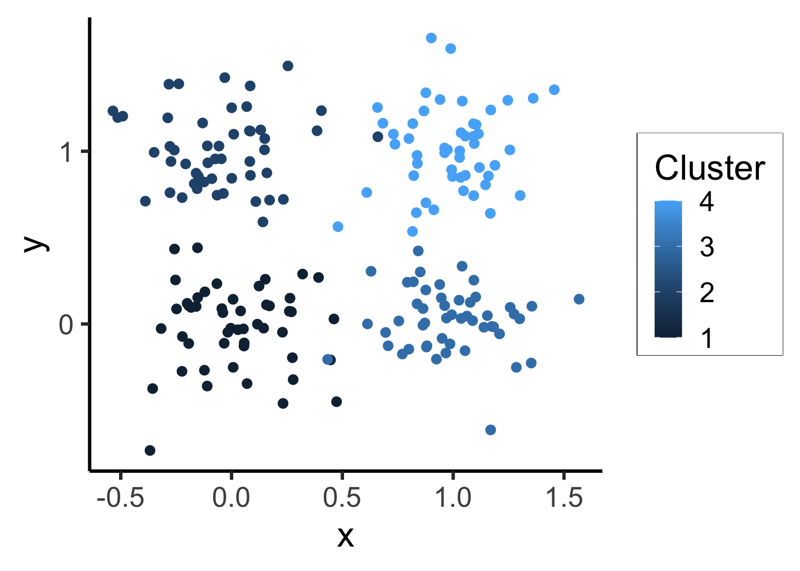
With factor() 💯
cluster_df |> ggplot(aes(x=x, y=y, color=factor(cluster))) +
geom_point(size=g_pointsize / 2) +
dsan_theme("half") +
labs(color="Cluster")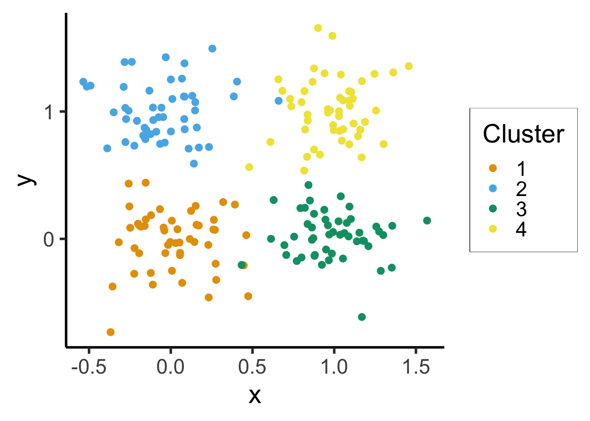
If individual plot gets too busy, facets provide an easy way to split data into multiple (automatically-labeled) plots!
facet_plot <- cluster_df |>
ggplot(aes(
x=x, y=y,
color=factor(cluster)
)) +
geom_point(size=g_pointsize / 2) +
dsan_theme("half") +
labs(color="Cluster") +
facet_wrap(vars(cluster),nrow=2)facet_plot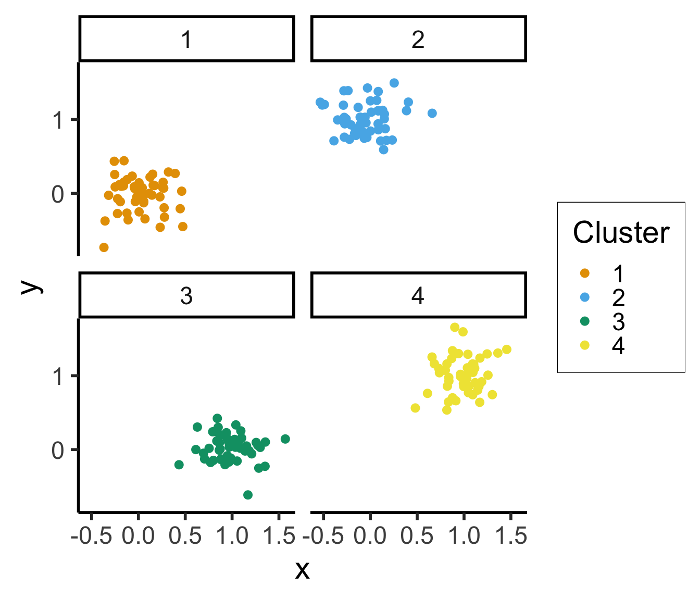
(Much more on this in DSAN 5200: Advanced Data Visualization 😉)
Using the ggwordcloud add-on to ggplot2!
library(showtext)Loading required package: sysfontsLoading required package: showtextdbshowtext_auto()
library(ggwordcloud)Warning: package 'ggwordcloud' was built under R version 4.3.3data("love_words_latin")
love_words_latin| iso_639_3 | word | name | native_speakers | speakers |
|---|---|---|---|---|
| eng | Love | English | 400.0000 | 800.0000 |
| spa | Amor | Spanish | 480.0000 | 555.0000 |
| fra | Amour | French | 76.8000 | 350.8000 |
| msa | Cinta | Malay | 77.0000 | 277.0000 |
| por | Amor | Portuguese | 220.0000 | 243.0000 |
| ind | Cinta | Indonesian | 43.0000 | 199.0000 |
| ita | Amore | Italian | 90.0000 | 114.0000 |
| deu | Liebe | German | 95.0000 | 107.5000 |
| swa | Pendo | Swahili | 8.0000 | 98.0000 |
| tur | Ask | Turkish | 78.5000 | 88.0000 |
| jav | Tresna | Javanese | 82.0000 | 82.0000 |
| vie | Tinh yeu | Vietnamese | 75.0000 | 75.0000 |
| tgl | Pag-ibig | Tagalog | 28.0000 | 73.0000 |
| hau | Soyayya | Hausa | 43.7000 | 63.2000 |
| ibo | Ihunanya | Igbo | 50.0000 | 50.0000 |
| pol | Milosc | Polish | 45.0000 | 50.0000 |
| hak | Oi | Hakka Chinese | 47.8000 | 47.8000 |
| uzb | Sevgi | Uzbek | 32.0000 | 32.0000 |
| ron | Dragoste | Romanian | 25.0000 | 29.0000 |
| nld | Liefde | Dutch | 22.0000 | 28.0000 |
| kur | Evin | Kurdish | 25.0000 | 25.0000 |
| hbs | Ljubav | Serbo-Croatian | 21.0000 | 21.0000 |
| afr | Liefde | Afrikaans | 7.2000 | 17.5000 |
| tso | Rirhandzu | Tsonga | 12.0000 | 15.4000 |
| som | Jacayl | Somali | 15.0000 | 15.0000 |
| bar | Liab | Bavarian | 14.0000 | 14.0000 |
| hun | Szeretet | Hungarian | 13.0000 | 13.0000 |
| lin | Bolingo | Lingala | 5.5000 | 12.5000 |
| aze | Sevgi | Azerbaijani | 12.0000 | 12.0000 |
| ilo | Ayat | Iloko | 9.1000 | 11.1000 |
| ces | Laska | Czech | 10.7000 | 10.7000 |
| cat | Amor | Catalan | 4.1000 | 10.1000 |
| swe | Karlek | Swedish | 9.6000 | 9.6000 |
| cdo | Ai | Min Dong Chinese | 9.5000 | 9.5000 |
| que | Khuyay | Quechua | 9.0000 | 9.0000 |
| tuk | Soygi | Turkmen | 6.7000 | 6.7000 |
| hrv | Ljubav | Croatian | 5.6000 | 5.6000 |
| dan | Karlighed | Danish | 5.5000 | 5.5000 |
| fij | Rakkaus | Fijian | 5.4000 | 5.4000 |
| sqi | Dashuria | Albanian | 5.4000 | 5.4000 |
| slk | Laska | Slovak | 5.2000 | 5.2000 |
| gug | Mborayhu | Paraguayan Guaraní | 4.8500 | 4.8500 |
| scn | Amuri | Sicilian | 4.7000 | 4.7000 |
| ssw | Lutsandvo | Swati | 2.3000 | 4.7000 |
| lmo | Amor | Lombard | 3.9000 | 3.9000 |
| jam | Lob | Jamaican Creole English | 3.2000 | 3.2000 |
| bos | Ljubav | Bosnian | 3.0000 | 3.0000 |
| lit | Meile | Lithuanian | 3.0000 | 3.0000 |
| nno | Kjarleik | Norwegian Nynorsk | 2.6000 | 2.6000 |
| nob | Kjarlighet | Norwegian Bokmål | 2.6000 | 2.6000 |
| war | Higugma | Waray | 2.6000 | 2.6000 |
| slv | Ljubezen | Slovenian | 2.5000 | 2.5000 |
| gom | Mog | Goan Konkani | 2.3000 | 2.3000 |
| epo | Amo | Esperanto | 0.0001 | 2.0001 |
| eus | Maitasun | Basque | 0.7500 | 1.8500 |
| als | Liebe | Tosk Albanian | 1.8000 | 1.8000 |
| lav | Milestiba | Latvian | 1.7500 | 1.7500 |
| nah | Tlazohtiliztli | Nahuatl languages | 1.7400 | 1.7400 |
| sco | Luve | Scots | 0.1200 | 1.6200 |
| glg | Amor | Galician | 1.5600 | 1.5600 |
| lim | Leefde | Limburgan | 1.3000 | 1.3000 |
| est | Armastus | Estonian | 1.1000 | 1.1000 |
| srd | Amore | Sardinian | 1.0000 | 1.0000 |
| cym | Cariad | Welsh | 0.7000 | 0.7000 |
| pms | Amor | Piemontese | 0.7000 | 0.7000 |
| ast | Amor | Asturian | 0.3500 | 0.6400 |
| isl | Ast | Icelandic | 0.3500 | 0.6400 |
| wln | Amour | Walloon | 0.6000 | 0.6000 |
| mlt | Imhabba | Maltese | 0.5200 | 0.5200 |
| lij | Amo | Ligurian | 0.5000 | 0.5000 |
| oci | Amor | Occitan | 0.5000 | 0.5000 |
| fry | Leafde | Western Frisian | 0.4700 | 0.4700 |
| hif | Pyar | Fiji Hindi | 0.4600 | 0.4600 |
| lad | Amor | Ladino | 0.1000 | 0.4500 |
| ltz | Leift | Luxembourgish | 0.3900 | 0.3900 |
| cos | Amore | Corsican | 0.3250 | 0.3250 |
| ksh | Leevde | Kölsch | 0.2500 | 0.2500 |
| bre | Karantez | Breton | 0.2200 | 0.2200 |
| ext | Amol | Extremaduran | 0.2000 | 0.2000 |
| gla | Gradh | Scottish Gaelic | 0.0570 | 0.0570 |
| arg | Aimor | Aragonese | 0.0250 | 0.0250 |
| mwl | Amor | Mirandese | 0.0150 | 0.0150 |
| vep | Armastuz | Veps | 0.0016 | 0.0016 |
| ina | Amor | Interlingua | 0.0015 | 0.0015 |
| ang | Lufu | Old English | 0.0000 | 0.0000 |
| sgs | Meile | Samogitian | 0.0000 | 0.0000 |
| lat | Amor | Latin | 0.0000 | 0.0000 |
set.seed(2024)
ggplot(love_words_latin, aes(label = word, size = speakers)) +
geom_text_wordcloud() +
scale_size_area(max_size = 40) +
theme_minimal()Warning in min(box[, 1]): no non-missing arguments to min; returning InfWarning in min(box[, 2]): no non-missing arguments to min; returning InfWarning in max(box[, 3]): no non-missing arguments to max; returning -InfWarning in max(box[, 4]): no non-missing arguments to max; returning -InfWarning in min(box[, 1]): no non-missing arguments to min; returning InfWarning in min(box[, 2]): no non-missing arguments to min; returning InfWarning in max(box[, 3]): no non-missing arguments to max; returning -InfWarning in max(box[, 4]): no non-missing arguments to max; returning -InfWarning in min(box[, 1]): no non-missing arguments to min; returning InfWarning in min(box[, 2]): no non-missing arguments to min; returning InfWarning in max(box[, 3]): no non-missing arguments to max; returning -InfWarning in max(box[, 4]): no non-missing arguments to max; returning -InfWarning in wordcloud_boxes(data_points = points_valid_first, boxes = boxes, :
Some words could not fit on page. They have been placed at their original
positions.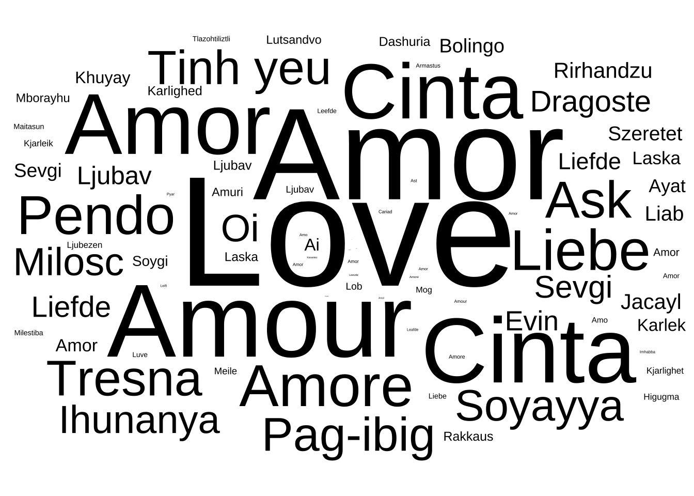
library(tidytext)
result <- tibble(read_lines("assets/finn.txt"))
# |>
# unnest_tokens(word, text)
head(result)| read_lines(“assets/finn.txt”) |
|---|
| riverrun, past Eve and Adam’s, from swerve of shore to bend |
| of bay, brings us by a commodius vicus of recirculation back to |
| Howth Castle and Environs. |
| Sir Tristram, violer d’amores, fr’over the short sea, had passencore |
| rearrived from North Armorica on this side the scraggy |